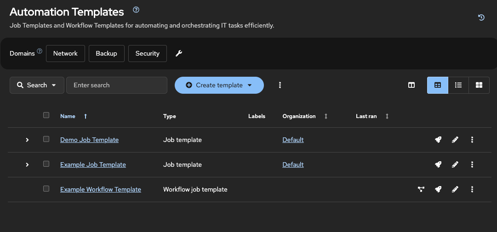

モジュール 8: Job Template の追加作成
プロジェクト内の異なる playbook を実行するために、2つ目と3つ目の Job Template を作成するガイド。
ラボ概要
このチャレンジでは、これまでの経験を活かして、さらに2つの Job Template を作成します。最初の Template とは異なり、これらの Template は Additional playbooks project の Playbook を使用し、異なる Host と Group（Inventory にまだ存在しない Host と Group を含む）を対象とします。また、Playbook が定義されていない Host を想定している場合に何が起こるかという、よくある問題のトラブルシューティングも行います。

ラボガイド
Additional playbooks project の playbook を使用して、2つの新しい Job Template を作成します。
-
Extended servicesでは、extended_services.ymlを使ってnode3に PostgreSQL データベースをデプロイします。 -
Set motdでは、motd_facts.ymlを使ってnode1に message of the day を設定します。
| この演習では、同じ Project 内の異なる playbook を複数 Job Template で使い分ける方法を示します。 |
|
automation controller へのログイン認証情報:
|
Task 1: "Extended Services" Job Template を作成する
最初に、データベースをデプロイする job template を作成します。
-
Templates ページへ移動する。
左側ナビゲーションメニューで Automation Execution → Templates に移動します。
-
新しい job template を作成する。
青色の Create template ボタンを クリック し、Create job template を選択します。
-
job template の詳細を入力する。
フォームに以下を入力します。
-
Name:
Extended services -
Job Type:
Run -
Inventory:
Lab-Inventory -
Project:
Additional playbooks -
Playbook:
extended_services.yml -
Credentials:
lab-credentialsを選択 -
Privilege Escalation:
becomeを有効にするため チェック
-
-
job template を保存する。
他の項目はそのままにして、青色の Create job template ボタンを クリック します。
|
Credentials フィールドは UI 上で必須ではありませんが、正しい machine credential を選択しないとジョブは失敗します。 |
Task 2: "Extended Services" Job Template を起動する
次に template を起動し、想定される失敗をトラブルシュートします。
-
template を起動する。
Templates ページに移動し、
Extended servicesjob template の横にある Launch アイコン（🚀）を クリック します。 -
失敗を確認して解消する。
ジョブ実行は 失敗 します。出力メッセージを読み、理由を確認してください。playbook は
[database]group 内のnode3という host を対象にしていますが、Lab-Inventoryにどちらも存在しません。 -
inventory を更新する。
inventory チャレンジで学んだ内容を使って
Lab-Inventoryに戻り、次を実施します。-
node3という新しい host を 作成 -
databaseという新しい group を 作成 -
databasegroup にnode3host を 追加
-
-
ジョブを再起動する。
Extended servicesjob template を再度 Launch し、今度は成功することを確認します。
Task 3: "Set motd" Job Template を作成する
次に、学んだ内容を使って 3つ目の job template を作成します。
-
Templates ページへ移動する。
Automation Execution → Templates に移動します。
-
新しい job template を作成する。
Create template ボタンを クリック し、Create job template を選択します。
-
job template の詳細を入力する。
フォームに以下を入力します。
-
Name:
Set motd -
Inventory:
Lab-Inventory -
Project:
Additional playbooks -
Playbook:
motd_facts.yml -
Credentials:
lab-credentialsを選択 -
Privilege Escalation: このボックスを チェック
-
-
job template を保存する。
青色の Create job template ボタンを クリック します。
Controller as Code Alternative
このチャレンジでは、host と group が欠落していることが原因で発生した障害のトラブルシューティングを行う必要がありました。CaCでは、inventory、host、group、job template がすべて事前に定義されており、dispatch ロールによってそれらが正しい依存関係の順序で作成されることが保証されるため、この種のエラーは完全に排除されます。
YAML 定義
controller-as-code/configs/module-08/controller_objects.yml から
---
controller_hosts:
- name: node3
inventory: Lab-Inventory
state: present
controller_groups:
- name: database
inventory: Lab-Inventory
hosts:
- node3
controller_templates:
- name: Extended services
organization: Default
state: present
inventory: Lab-Inventory
become_enabled: true
playbook: extended_services.yml
project: Additional playbooks
credentials:
- lab-credentials
- name: Set motd
organization: Default
state: present
inventory: Lab-Inventory
become_enabled: true
playbook: motd_facts.yml
project: Additional playbooks
credentials:
- lab-credentialsCaCでは、node3 host と`database` group は Extended services job template よりも前に作成されるため、UIの演習で発生したような障害は決して発生しません。
トラブルシューティング
問題が発生した場合や不具合を見つけた場合は、GitHub で issue を作成してください。